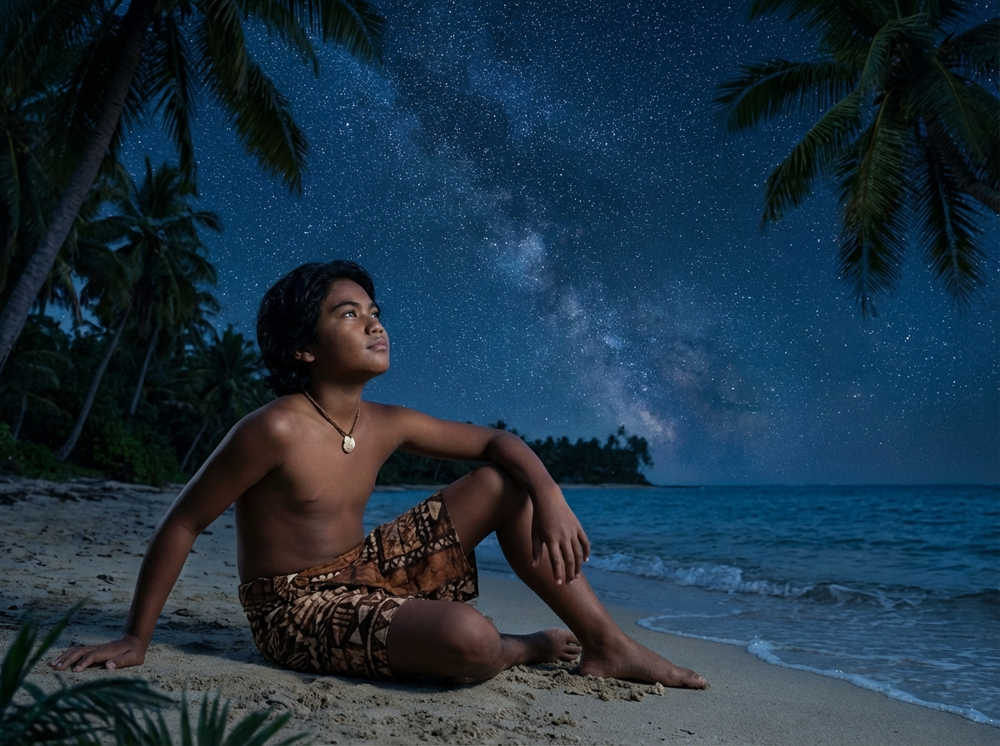
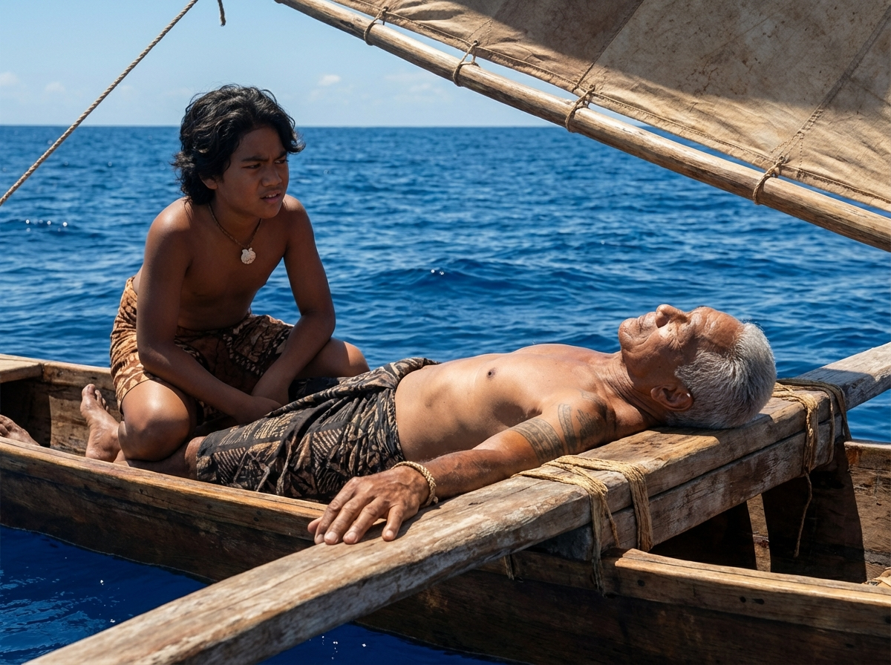
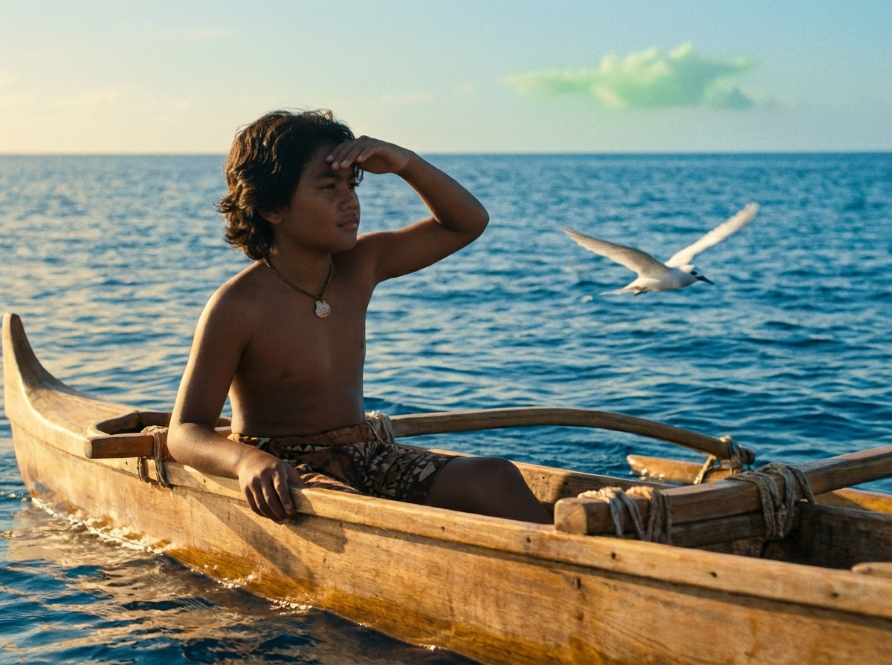
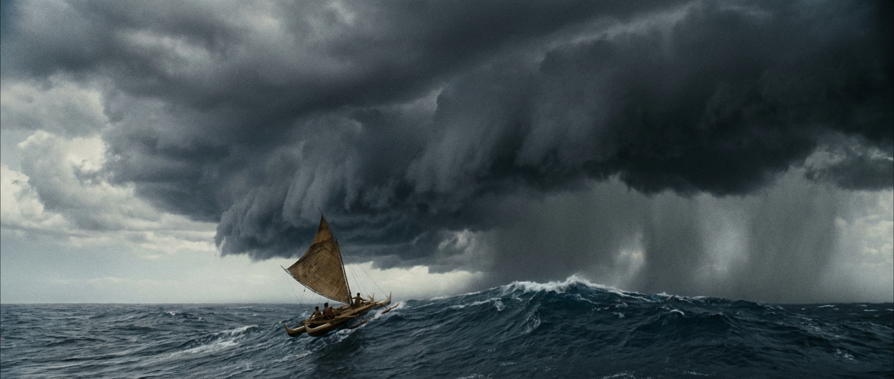
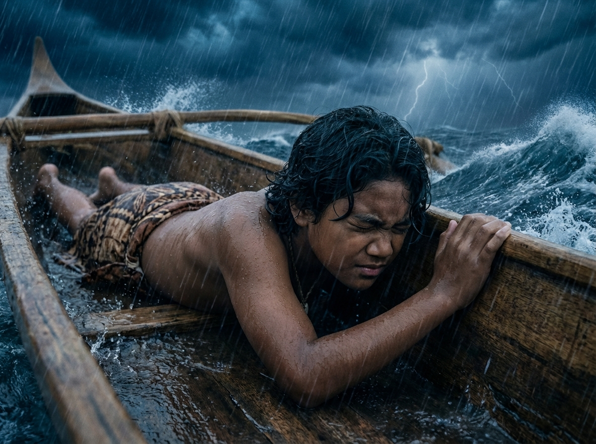
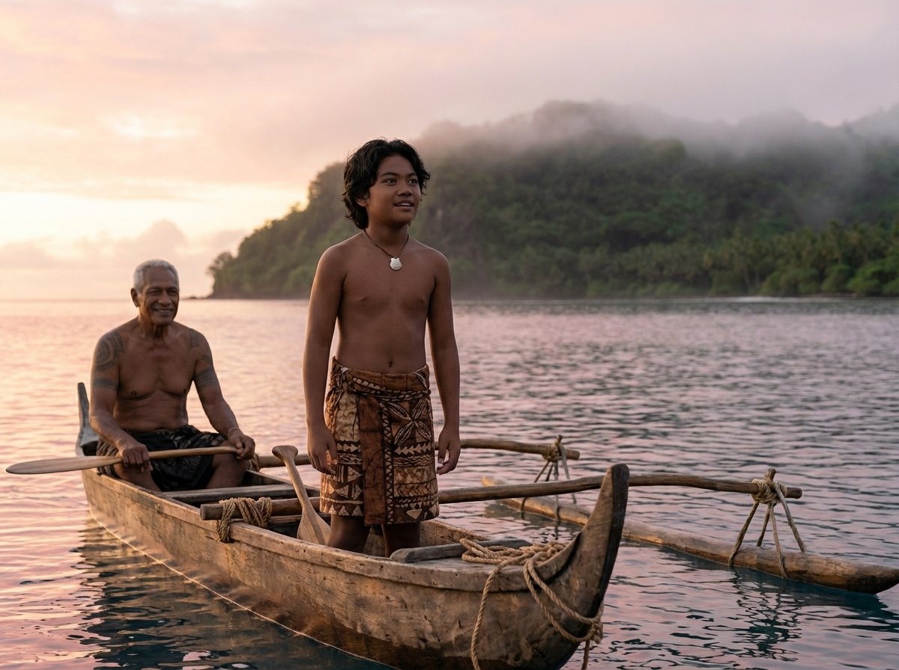
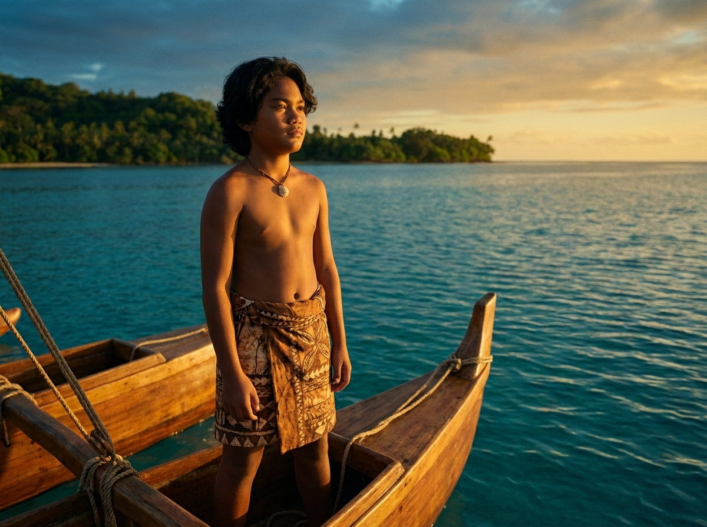

The Boy Who Mapped the Wind
A Tale of Attention and Listening
Polynesian Pacific · 1100 AD

A Tale of Attention and Listening
Polynesian Pacific · 1100 AD

Koa could name every star that mattered. At twelve, he could trace the path from their island to the fishing grounds by the arc of Hokulea alone. He was the youngest in his family to learn the star compass, and he wore that knowledge like a sail full of wind.
His grandfather Tau, the last great navigator of their island, had taught him since he could walk. But lately Koa thought the lessons were too slow. He already knew the stars. What else was there?
"I am ready," Koa told his grandfather one evening. "I can navigate to Raiatea and back with my eyes closed."
"With your eyes closed," Tau repeated. He did not smile. "Then you have learned nothing at all."
The next morning Tau woke Koa before dawn. The double-hulled canoe was already loaded: water gourds, dried fish, pandanus mats. No one else was aboard.
"Today you navigate," Tau said. "I will only watch."
Koa grinned. He pushed them out through the reef passage, read the angle of the morning star, and set the sail. The canoe caught the trade wind and surged forward. The island shrank behind them until it was just a green smudge, then nothing.
Open ocean in every direction. Koa felt the size of it settle against his chest like a hand.

By midday Koa noticed something strange. Tau was lying in the hull with his eyes closed, one hand resting on the outrigger beam. He had been like that for an hour.
"Grandfather, are you sleeping?"
"I am listening," Tau said. "There are three swells passing under us right now. One from the northeast, one reflected from an island we cannot see, and one old swell from a storm two days gone. Can you feel them?"
Koa put his hand on the hull. He felt the ocean moving. But three swells? He felt one: up, down. That was all.
"The stars tell you where to aim," Tau said. "But the ocean tells you where you are. You must learn to listen with more than your eyes."

That afternoon Tau pointed at a faint greenish tint on the underside of a cloud far to the west.
"What do you see?"
"A cloud," Koa said.
"Look at the color beneath it. That green is the lagoon reflecting upward. There is an island under that cloud, even though we cannot see it."
Koa stared. He would have sailed past it without a second glance.
Then a white tern crossed their bow, flying low and steady toward the southwest. Tau watched it without turning his head.
"Terns fly out to fish in the morning and return to land at dusk. It is afternoon. She is going home. Follow her line and you will find shore."
The ocean was full of messages Koa had never thought to read.

The sky changed without warning. A wall of cloud rose from the south, swallowing the sun. The wind shifted, then dropped, then came back from the wrong direction. Rain fell so hard Koa could not see past the bow.
The stars vanished. The horizon vanished. Every landmark Koa relied on was gone.
"Grandfather!" Koa shouted over the wind. "I cannot see anything!"
"Then stop looking," Tau said calmly. "Lie down. Close your eyes. Feel."

Koa pressed himself flat against the hull. Rain hammered his back. The canoe pitched and rolled. He wanted to open his eyes, to grab the steering oar, to do something.
Instead he listened.
At first there was only noise: wind, water, the creak of lashings. But slowly, beneath the chaos, he felt it. A long, deep rhythm pushing against the hull from the northeast. And a shorter, sharper pulse crossing it at an angle.
Two swells. He could feel them separately now, like two voices speaking at once.
"The northeast swell has not changed," he said, his voice shaking. "If I keep it on my left, we are still heading west."
In the dark, he felt Tau's hand rest briefly on his shoulder.

The storm passed in the night. Koa did not sleep. He kept his hand on the hull and held the course by feel alone, adjusting the sail each time the swell shifted beneath him.
When the first gray light touched the sky, he opened his eyes. And there, on the western horizon, a dark green line rose from the sea. An island. The right island.
Koa let out a breath he did not know he had been holding.
"You found it," Tau said quietly.
"The ocean found it," Koa said. "I just listened."
Tau smiled for the first time in two days.

They beached the canoe in a shallow lagoon and rested under the palms. That evening, as the stars returned, Koa sat beside his grandfather on the shore.
"I thought I knew the ocean because I knew the stars," Koa said. "But I was only reading half the map."
"The other half cannot be drawn," Tau said. "It must be felt. The swells, the wind, the birds, the color of the water. They are always speaking. A navigator's gift is not knowing the answers. It is knowing how to pay attention."
Koa looked out at the dark water. For the first time he did not see emptiness. He saw a world full of signals, patient and constant, waiting for someone willing to listen.
He closed his eyes and felt the swell move beneath the sand.
Answer the questions below to test what you learned from the story.
The ocean is always speaking. A navigator's gift is knowing how to listen.— Tau